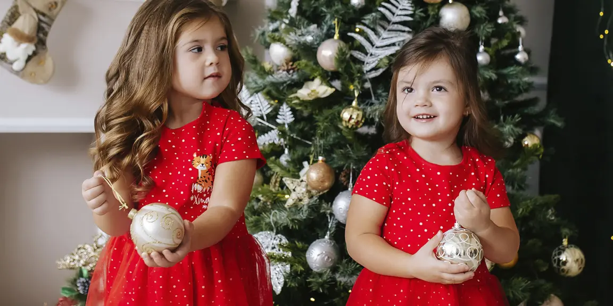

Новый год — время волшебства, ярких эмоций и красивых фотографий. В этот период так хочется радоваться мелочам и вместе с близкими ждать праздника. А сделать его веселее и уютнее помогут одинаковые наряды для всей семьи.
По традиции мы представили новогоднюю коллекцию одежды со стильными комплектами для праздника и милыми пижамами для утра 1 января. В статье расскажем, почему family look — это классно, и покажем одежду, в которой будет комфортно и детям, и родителям.

Праздничные фото станут волшебными
Новогодние фотографии часто хочется пересматривать — они напоминают о самых теплых моментах праздника. В одинаковых нарядах каждый снимок получается особенным.
Неважно, позируете ли вы у елки с профессиональным фотографом или делаете селфи всей семьей за новогодним столом — фотографии в стиле family look всегда эффектные.
Например, вы можете выбрать одинаковые клетчатые пижамы для детей и взрослых. А если не хотите полностью повторять образы, возьмите одну общую деталь. Красные носки, одинаковые шапочки или футболки с забавными принтами сделают каждый кадр душевным.
Домашний праздник станет уютнее и веселее
Если вы встречаете Новый год дома, это отличный повод красиво нарядиться всей семьей! Представьте: вы наряжаете елку, готовите ужин и ждете боя курантов в одинаковых нарядах. А утром все вместе завтракаете в комплектах с похожими тематическими принтами.
Кстати, дети обожают такие сюрпризы. Ведь что может быть веселее, чем быть похожими на маму и папу? А родителям приятно видеть их счастливые улыбки, когда все одеты как одна дружная команда.
Быть самой яркой семьей на празднике
Приглашение в гости на Новый год — еще один повод показать единство семьи с помощью одежды. Family look поможет вам создать волшебное настроение. Согласитесь, это так здорово — прийти на праздник в одинаковых нарядах или с общими деталями в образах!
Поддержать праздничный дресс-код на детских праздниках
Новогодние праздники — это всегда долгожданно и волнительно. Детям предстоит быть в центре внимания: читать стихи, танцевать и петь. В такие моменты поддержка взрослых очень важна. Похожая одежда и аксессуары помогут проявить заботу и показать свое участие в жизни ребенка.
Порадуйте дочку воздушным розовым платьем с объемными рукавами и цветочным декором, чтобы она почувствовала себя настоящей принцессой. А мама может надеть блузу и юбку в тон. Для связки образов используйте одинаковые аксессуары, например, туфли бежевого цвета. Для мужского дресс-кода предлагаем выбрать белые рубашки и яркую бабочку или галстук — в PlayToday есть стильные варианты для мальчиков.
Создать новую семейную традицию
Семейный образ может стать вашей особенной новогодней историей. В этом году — яркие пижамы, в следующем — комплекты с шортами и футболками, а через год — забавные футболки с одинаковым принтом.